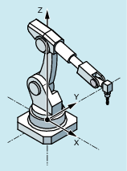
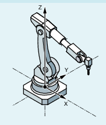
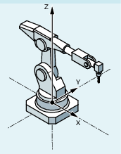
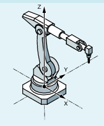

Position data with Cartesian coordinates and specification of the tool orientation are not sufficient to uniquely identify the machine position, as several joint positions are possible for the same tool orientation. Depending on the kinematics involved, there can be as many as 8 different joint positions. These different joint positions are transformation-specific.
In an order to avoid any ambiguity, the joint positions are specified under the STAT address.
| Note |
|
The control takes into account programmed STAT values only for PTP motions. They are ignored with CP motions because a change of position is not normally possible while traversing with an active transformation. When traversing with active CP, the position for the target point is taken from the starting point. |
| Adjustable address to specify joint positions |
| Binary or decimal value Contains one bit for each possible position. The significance of the bits is defined by the particular transformation. |
The use of STAT is to be illustrated by the example of a 6-axis articulated robot with milling spindle. The kinematic transformation is to be realized using the ROBX robot transformation (precondition: Compile cycle "RMCC/ROBX Transformation Extended Robotics" is loaded and active).
| Note |
Example with ROBX only with conventional machine data parameterizationThe example is only possible with machine data parameterization, not with kinematic chains. |
Axes A1, A2 and A3 are the main axes of the articulated robot. The axes A4, A5 and A6, which are also designated as head or hand/wrist axes, are positioned in the working area with the main axes. The additional motion options of the hand/wrist axes enable the milling spindle to be orientated in space as required for the particular machining task. Various articulated joint positions are possible to achieve the same tool orientation.
The articulated joint positions required for machining are selected by programming bit 0 ... 2 of the adjustable STAT address:
Program example:
| Program code | Comment |
|---|---|
| ... | |
| N14 T="T8MILLD20" D1 | ; $TC_DP3[1,1]=132.95 |
| N16 ORIMKS | |
| N17 G1 PTP X1665.67 Y0 Z1377.405 A=0 B=0 C=0 STAT=... F2000 | ; The STAT value defines the articulated joint positions (see below) |
| ... |
| → Shoulder left → Elbow down → No handflip |  |
| → Shoulder right → Elbow up → No handflip |  |
| → Shoulder left → Elbow down → Handflip |  |
| → Shoulder right → Elbow up → Handflip |  |
For TRANSMIT_K, the address STAT is used to resolve the ambiguity regarding the pole.
The following applies if the rotary axis must rotate through 180º or the contour for CP would go through the pole:
Bit 0 | Only relevant for $NT_POLE_SIDE_FIX[n] = 1 or 2 for machine data parameterization the $MC_TRANSMIT_POLE_SIDE_FIX_1/2 = 1 or 2: | |
= 0 | Rotary axis traverses through +180º or rotates clockwise. | |
= 1 | Rotary axis rotates through -180º or rotates counterclockwise. | |
Bit 1 | Only relevant for $NT_POLE_SIDE_FIX[n] = 0 for machine data parameterization the $MC_TRANSMIT_POLE_SIDE_FIX_1/2 = 0: | |
= 0 | The axis traverses through the pole. The rotary axis does not rotate. | |
= 1 | The axis rotates around the pole. Bit 0 of STAT is relevant. | |
See also:
Activating/deactivating Cartesian PTP travel (PTP, PTPG0, PTPWOC, CP)